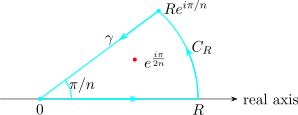

11.3 Conformal Mapping and Möbius Transformations
Problem 11.17. Determine explicitly the largest disc about the origin on which the mapping \(f(z) = z^{2} - 2z\) is one-to-one. Justify your answer.
Problem 11.18. Given a Möbius transformation \(T(z) = \dfrac {az + b}{cz + d}\), determine necessary and sufficient conditions on \(a, b, c, d\) so that \(T\) maps the domain \(D = \{z : \operatorname {Re}(z) > 0\}\) onto \(G = \{z : \operatorname {Re}(z) < 0\}\).
- (a).
- Determine a Möbius transformation mapping the upper half of the unit disc onto the first quadrant.
- (b).
- Find a conformal map taking the part of the unit disc in the first quadrant one-to-one and onto the upper half plane. Give the algebraic expression of the map.
- (a).
- Show that if \(f : \mathbb {C} \rightarrow \mathbb {C}\) is analytic then \(f\) is a conformal map at \(z_0\) whenever \(f'(z_0) \neq 0\).
- (b).
- Construct explicitly a conformal map from the open first quadrant to the interior of the disc centred at the origin with radius \(2\).
Problem 11.21. Consider \(f(z) = z^{3}\). Plot the images of the following four objects on the same complex plane: (a) the point \(z = 0\); (b) the point \(z = 1\); (c) the point \(z = -1\); (d) the curve shown below. Justify your answer.

Problem 11.22. A function \(w(z)\) is analytic in a convex domain \(D\) and \(\operatorname {Re}w'(z) > 0\) in \(D\).
- (a).
- Prove that \(w(z)\) is one-to-one in \(D\).
- (b).
- Using (a), prove that if \(w(z) = z + \displaystyle \sum ^{\infty }_{n=2} a_n z^{n}\) on \(\left |z\right | < 1\) and \(\displaystyle \sum ^{\infty }_{n=2} n\left |a_n\right | < 1\), then \(w(z)\) is one-to-one on \(\left |z\right | < 1\).
- (a).
- For a given power series \(\displaystyle \sum ^{\infty }_{n=0} a_n z^{n}\), define \(R\) with \(0 \leq R \leq \infty \) by \[\dfrac {1}{R} = \limsup \left |a_n\right |^{1/n}.\] Show that if \(\left |z\right | < R\) the series converges absolutely.
- (b).
- Find the largest disc centred at \(0\) on which the power series \(\displaystyle \sum ^{\infty }_{n=0} z^{n!}\) is an analytic function.
Problem 11.24. Determine the largest disc about the origin whose image under \(f(z) = z^{3} + iz - 1\) is one-to-one.
Questions on this section
Stuck on something here? Ask below and it stays attached to this topic.